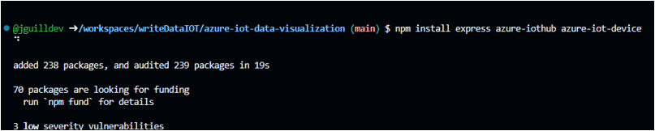

El siguiente paso será configurar y crear el grupo de consumidores. Para ello, debemos ir al IoT Hub dentro de Azure y acceder a nuestro dispositivo, en este caso RaspberryPiSim. Luego, dirígete a la configuración del centro de conectividad y, en el espacio destinado a los grupos de consumidores, dale un nombre a nuestro grupo; para este caso lo llamaremos de forma similar al entorno, es decir, 'raspberrypisim' (con letras minúsculas). Es importante recordar este nombre ya que más tarde lo utilizaremos en la configuración del socket para establecer la comunicación entre el dispositivo y la aplicación. Esta configuración será esencial para poder leer y procesar los datos que lleguen desde el dispositivo a través del Azure IoT Hub. Además, definir correctamente el grupo de consumidores nos permitirá administrar las suscripciones y asegurar que cada aplicación conectada reciba la información que necesita sin conflictos. Esto es especialmente útil cuando múltiples aplicaciones desean consumir los datos al mismo tiempo, asegurando una comunicación eficiente y controlada.
La siguiente imagen muestra como se veria en azure:
Debemos clonar él repositorio de git que entrega por defecto Azure en su documentación, esto lo podemos hacer usando el editor de código VSC (visual studio code) creando una carpeta en cualquier parte de nuestro PC, y accediendo a esa ruta, es decir si tienes la carpeta creada, en C-desktop-carpetacreada, debes guardar esa ruta, abrir la terminal y acceder a ella mediante el comando:
cd c:\desktop\carpetacreada
El siguiente paso será ejecutar el comando para clonar él repositorio que entrega Microsoft en su documentación de azur desde la terminal: DOCUMENTACION AZURE
Él comando es el siguiente:
git clone https://github.com/usuario/web-apps-node-iot-hub-data-visualization.git
Luego ir a la carpeta ejecutando también desde la terminal:
cd web-apps-node-iot-hub-data-visualization
Esto nos llevará a la terminal a la carpeta del Proyecto Muy bien ahora deberemos configurar él entorno mediante diferentes comandos en la terminal como npm, ejecutando:
npm install
Se usa también un framework de node.js para crear él socket o servidor web (Él sockets un punto de comunicación, que permite que nuestro código, se conecte a los datos, que está generando él simulador, y leyendo Azure), ejecutando:
npm install express
Para interactuar con él IoT Hub se debe instalar azure-iothub, ejecutando:
npm install azure-iothub
También él Azure-iot-device, que permite la comunicación con él dispositivo simulado, en este caso un raspberryPi, ejecuta desde la terminal:
npm install Azure-iot-device
Él protocolo MQTT es él más usado para enviar mensajes en entornos de IoT, así que también ejecutaremos:
npm install Azure-iot-device-mqtt
Ejecutar socket.io para la inicialización del socket desde la terminal:
npm install socket.io
Igual que en él código de la simulación debemos reemplazar en la constante de este código la línea const iotHubConnectionString, por la cadena de conexión principal que usamos en él simulador del Raspberry Pi
Además, también la línea que se refiere al grupo de consumo configurado previamente que nosotros llamamos raspberrypisim, en la línea 15 del server.js

Finalmente ejecutamos desde la terminal usando él comando:
node server.js
Esto permitirá que se escuche él puerto 3000, y se dibuje las señales actuales, que empieza a recibir este socket, del sensor de temperatura y humedad del Raspberry Pi Simulado
Y así llegamos al final del proceso de configuración del grupo de consumidores. Espero que esta guía te haya sido útil para conectar tu Raspberry Pi con Azure IoT Hub. Si te quedó alguna duda o quieres seguir aprendiendo, te invito a echar un vistazo a más artículos y tutoriales en el siguiente enlace: